Click on the image above to view the table
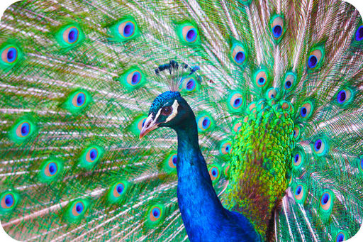
This stunning bird is a peacock. Do you know why he is spreading out his big, colorful tail feathers like a fan? He is trying to attract a female for mating. Both the feathers and the behavior evolved because they increase the chances that males of the species will reproduce and pass their genes to the next generation. Many other vertebrates have similar behaviors for attracting mates. Even fish display some remarkably sophisticated mating behaviors.
Fish and birds are both vertebrates. Vertebrates are a diverse and fascinating group of animals. In many ways, they are very different from the invertebrates described in previous chapters. Elaborate mating behaviors are just one way they differ. This chapter describes many other differences between vertebrates and invertebrates. It also describes in detail the classes of vertebrates from fish to birds.
Vertebrates are a subphylum of the phylum Chordata. Like all chordates, vertebrates have a notochord, a dorsal hollow nerve cord, pharyngeal slits, and a post-anal tail. What other characteristics do vertebrates have? What traits set them apart from invertebrate chordates?
The main distinguishing feature of vertebrates is their vertebral column, or backbone (see Figure below ). The backbone runs from the head to the tail along the dorsal (top) side of the body. The vertebral column is the core of the endoskeleton. It allows a vertebrate to hold its shape. It also houses and protects the spinal (nerve) cord that passes through it. The vertebral column is made up of repeating units called vertebrae (singular, vertebra). In many species, there are shock-absorbing discs between the vertebrae to cushion them during movement.
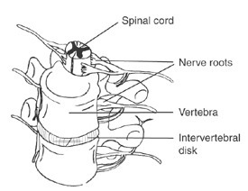
Human Vertebral Column and Vertebrae. The human vertebral column consists of 33 vertebrae. Two vertebrae are shown here enlarged.
Another distinguishing feature of vertebrates is an endoskeleton made of bone or cartilage. Cartilage is a tough tissue that contains a protein called collagen. Bone is a hard tissue that consists of a collagen matrix, or framework, filled in with minerals such as calcium. Bone is less flexible than cartilage but stronger. An endoskeleton made of bone rather than cartilage allows animals to grow larger and heavier. Bone also provides more protection for soft tissues and internal organs. As shown in Figure below , the vertebrate endoskeleton includes a cranium, or skull, to enclose and protect the brain. It also generally includes two pairs of limbs. Limb girdles (such as the human hips and shoulders) connect the limbs to the rest of the endoskeleton.
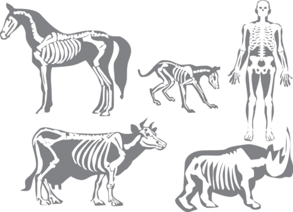
Vertebrate Endoskeletons. The vertebrate endoskeleton includes a vertebral column, cranium, limbs, and limb girdles. Can you find these parts in each endoskeleton shown here?
There are several additional traits found in virtually all vertebrates.
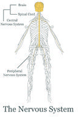
Nervous System (Human). The vertebrate nervous system includes a brain and spinal cord. It also includes a body-wide network of nerves, called peripheral nerves. They connect the spinal cord with the rest of the body.
Vertebrates reproduce sexually, and almost all of them have separate male and female sexes. Generally, aquatic species have external fertilization, whereas terrestrial species have internal fertilization. Can you think of a reason why aquatic and terrestrial vertebrates differ in this way? Vertebrates have one of the following three reproductive strategies: ovipary, ovovivipary, or vivipary.
There are about 50,000 vertebrate species, and they are placed in nine different classes. Five of the classes are fish. The other classes are amphibians, reptiles, birds, and mammals. Table below lists some of the distinguishing traits of each class.
Click on the image above to view the table
The earliest vertebrates were jawless fish, similar to living hagfish. They lived between 500 and 600 million years ago. They had a cranium but no vertebral column. The phylogenetic tree in Figure below gives an overview of vertebrate evolution. As more data become available, new ideas about vertebrate evolution emerge.
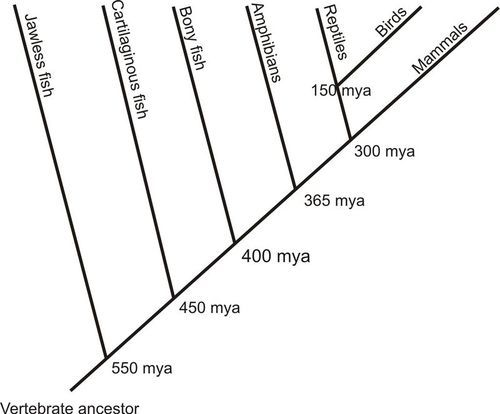
Phylogenetic Tree of Vertebrate Evolution. The earliest vertebrates evolved almost 550 million years ago. Which class of vertebrates evolved last?
Not too long after hagfish first appeared, fish similar to lampreys evolved a partial vertebral column. The first fish with a complete vertebral column evolved about 450 million years ago. These fish also had jaws and may have been similar to living sharks. Up to this point, all early vertebrates had an endoskeleton made of cartilage rather than bone. About 400 million years ago, the first bony fish appeared. A bony skeletal could support a larger body. Early bony fish evolved into modern ray-finned and lobe-finned fish.
Amphibians, reptiles, mammals, and birds evolved after fish.
Until mammals and birds evolved, all vertebrates were ectothermic. Ectothermy means regulating body temperature from the outside through behavioral changes. For example, an ectotherm might stay under a rock in the shade in order to keep cool on a hot, sunny day. Almost all living fish, amphibians, and reptiles are ectothermic. Their metabolic rate and level of activity depend mainly on the outside temperature. They can raise or lower their own temperature only slightly through behavior alone.
Both mammals and birds evolved endothermy. Endothermy means regulating body temperature from the inside through metabolic or other physical changes. On a cold day, for example, an endotherm may produce more heat by raising its metabolic rate. On a hot day, it may give off more heat by increasing blood flow to the surface of the body. Keeping body temperature stable allows cells to function at peak efficiency at all times. The metabolic rate and activity level can also remain high regardless of the outside temperature. On the other hand, maintaining a stable body temperature requires more energy—and more food.
1. Describe the vertebrate vertebral column, and list its functions.
2. Contrast cartilage and bone, and state the advantages of a bony endoskeleton relative to a cartilaginous endoskeleton.
3. Identify the components of the vertebrate nervous system.
4. What is an adaptive immune system?
5. Define ovipary, ovovivipary, and vivipary. Which vertebrates use each type of reproductive strategy?
6. Create a time line of vertebrate evolution that shows how and when important vertebrate traits evolved.
7. Explain the significance of changes in the number of heart chambers during the course of vertebrate evolution.
8. Compare and contrast ectothermy and endothermy, including their pros and cons.
The earliest and simplest vertebrates are fish. Fish also have the greatest number of vertebrate classes. Think about some of the fish you are familiar with, such as fish you eat or fish you may have seen in aquariums.
Fish are aquatic vertebrates. They make up more than half of all vertebrate species. They are especially important in the study of vertebrate evolution because several important vertebrate traits evolved in fish.
Fish show great diversity in body size. They range in length from about 8 millimeters (0.3 inches) to 16 meters (about 53 feet). Most are ectothermic and covered with scales. Scales protect fish from predators and parasites and reduce friction with the water. Multiple, overlapping scales provide a flexible covering that allows fish to move easily while swimming.
Many structures in fish are adaptations for their aquatic lifestyle. Several are described below and shown in Figure below .
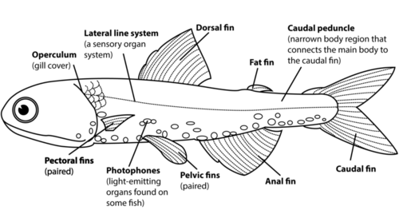
General Fish Body Plan. A fish has a stream-lined body with gills and fins.
Fish have a circulatory system with a two-chambered heart. Their digestive system is complete and includes several organs and glands. Jawed fish use their jaws and teeth to grind up food before passing it to the rest of the digestive tract. This allows them to consume larger prey.
Fish also have a centralized nervous system with a brain. Fish brains are small compared with the brains of other vertebrates, but they are large and complex compared with the brains of invertebrates. Fish also have highly developed sense organs that allow them to see, hear, feel, smell, and taste. Sharks and some other fish can even sense the very low levels of electricity emitted by other animals. This helps them locate prey.
Nearly all fish reproduce sexually, and most species have separate sexes. Those without separate sexes avoid self-fertilization by producing sperm and eggs at different times. Each fish typically produces a large number of gametes. In most fish species, fertilization takes place externally. These fish are oviparous. Eggs are laid and embryos develop outside the mother’s body. In a minority of fish, including sharks, eggs develop inside the mother’s body but without nourishment from the mother. These fish are ovoviviparous.
In many species of fish, a large group of adults come together to release their gametes into the water at the same time. This is called spawning. It increases the chances that fertilization will take place. It also means that many embryos will form at once, which helps ensure that at least some of them will be able to escape predators. With spawning, there is no way for fish parents to know which embryos are their own. Therefore, fish generally don’t provide any care to their eggs or offspring. There are some exceptions, however, including the fish described in Figure below .
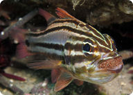
Mouth Brooding. Some species of fish carry their fertilized eggs in their mouth until they hatch. This is called mouth brooding. If you look closely, you can see the eggs inside the mouth of the Sydney cardinalfish pictured here.
Fish eggs hatch into larvae that are different from the adult form of the species (see Figure below ). A larva swims attached to a large yolk sac, which provides the larva with food. The larva eventually goes through metamorphosis and changes into the adult form. However, it still needs to mature before it can reproduce.
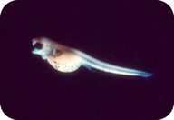
Trout-perch Larva. This newly hatched trout-perch larva doesn’t look very fish-like. The structure hanging from the larva is the yolk sac.
There are about 28,000 existing species of fish, and they are placed in five different classes. The classes are commonly referred to as hagfish, lampreys, cartilaginous fish, ray-finned fish, and lobe-finned fish (see Table above in the previous lesson).
Hagfish are very primitive fish. They retain their notochord throughout life rather than developing a backbone, and they lack scales and fins. They are classified as vertebrates mainly because they have a cranium. Hagfish are noted for secreting large amounts of thick, slimy mucus. The mucus makes them slippery, so they can slip out of the jaws of predators.
Like hagfish, lampreys also lack scales, but they have fins and a partial backbone. The most striking feature of lampreys is a large round sucker, lined with teeth, that surrounds the mouth (see Figure below ). Lampreys use their sucker to feed on the blood of other fish species.
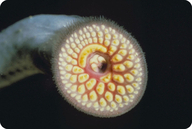
Sucker Mouth of a Lamprey. The mouth of a lamprey is surrounded by a tooth-lined sucker.
Cartilaginous fish include sharks, rays, and ratfish (see Figure below ). In addition to an endoskeleton composed of cartilage, these fish have a complete backbone. They also have a relatively large brain. They can solve problems and interact with other members of their species. They are generally predators with keen senses. Cartilaginous fish lack a swim bladder. Instead, they stay afloat by using a pair of muscular fins to push down against the water and create lift.
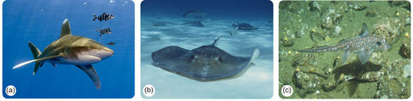
Cartilaginous Fish. All of these fish belong to the class of cartilaginous fish with jaws. (a) Oceanic whitetip shark (b) Ray (c) Ratfish
One of the most important traits of cartilaginous fish is their jaws. Jaws allow them to bite food and break it into smaller pieces. This is a big adaptive advantage because it greatly expands the range of food sources they can consume. Jaws also make cartilaginous fish excellent predators. It you’ve ever seen the film Jaws, then you know that jaws make sharks very fierce predators (see also Figure below ).
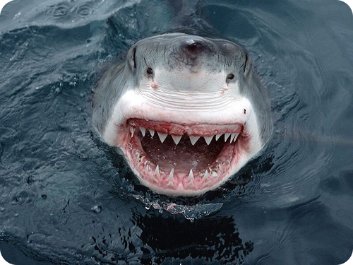
Jaws of a Shark. Sharks have powerful jaws with multiple rows of sharp, saw-like teeth. Most other fish are no match for these powerful predators.
Ray-fined fish include the majority of living fish species. including goldfish, tuna, salmon, perch, and cod. They have a bony endoskeleton and a swim bladder. Their thin fins consist of webs of skin over flexible bony rays, or spines. The fins lack muscle, so their movements are controlled by muscles in the body wall. You can compare their ray fins with the fleshy fins of lobe-finned fish in Figure below .
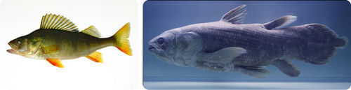
Fins of Bony Fish. The fins of ray-finned and lobe-finned fish are quite different. How is the form of the fins related to their different functions in the two classes of fish? Ray Fin (left), Lobe Fin (right)
Lobe-fined fish are currently far fewer in number than ray-finned fish. Their fins, like the one shown in Figure above , contain a stump-like appendage of bone and muscle. There are two groups of lobe-finned fish still alive today: coelacanths and lungfish.
Invertebrate chordates use their gills to filter food out of water, not to absorb oxygen. In the early evolution of fish, there was a switch to using gills to absorb oxygen instead of to filter food. Gills consist of many thin, folded tissues that provide a large surface area for oxygen uptake. With more oxygen absorbed by the gills, fish could become much larger and more active.
Ancestors of hagfish are thought to have been the earliest vertebrates. Their fossils date back to about 550 million years ago. Fossils of cartilaginous fish with jaws, resembling living sharks, first appeared in the fossil record about 450 million years ago. They were followed about 50 million years later by the bony fish.
At first, the lobe-finned bony fish were much more common than the ray-finned bony fish that dominate today. Lobe-finned fish were also ancestral to amphibians. Their stump-like appendages and lung-like organs evolved into amphibian legs and lungs. Ray-finned bony fish may have been the first fish to evolve in freshwater. They eventually became the most diverse and dominant class of fish.
The habitats and diets of fish are varied. They live throughout the ocean and also in freshwater lakes, ponds, rivers, and streams.
Most fish are predators, but the nature of their prey and how they consume it differs from one class to another and even within classes.
Today, more than 1,000 species of fish are at risk of extinction. This is mainly because of human actions. Specific causes include over-fishing and habitat destruction caused by water pollution, dam building, and the introduction of non-native species.
1. What are gills? What purpose do they serve in fish?
2. Describe fish scales, and state their functions.
3. Describe how fish use their muscles to swim.
4. What is a swim bladder? How is it used?
5. List two ways that fish can sense prey animals.
6. Assume that a new species of fish has been discovered deep in the ocean. It has a complete vertebral column made of cartilage. Which class should the new species be placed in? Name one other trait you would expect to find in the new species of fish. Explain your answers.
7. Explain why the practice of spawning is adaptive.
8. Fish with jaws may be very large. Infer how their jaws may be related to their large body size.
Lobe-finned fish were the ancestors of amphibians, which were the first vertebrates to live on land.
Amphibians are vertebrates that exist in two worlds. They divide their time between freshwater and terrestrial habitats. They share a number of features with air-breathing lungfish, but they also differ from lungfish in many ways. One way they differ is their appendages. Amphibians are the first true tetrapods, or vertebrates with four limbs. Modern amphibians include frogs, salamanders, and caecilians, as shown Figure below .
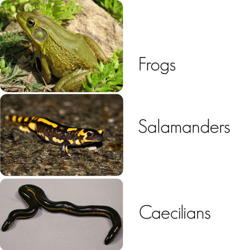
Examples of Living Amphibians. In what ways do these three amphibians appear to be similar? In what ways do they appear to be different?
Amphibians have less variation in size than fish, ranging in length from 1 centimeter (2.5 inches) to 1.5 meters (about 5 feet). They generally have moist skin without scales. Their skin contains keratin, a tough, fibrous protein found in the skin, scales, feathers, hair, and nails of tetrapod vertebrates, from amphibians to humans. Some forms of keratin are tougher than others. The form in amphibian skin is not very tough, and it allows gases and water to pass through their skin.
Amphibians are ectothermic, so their internal body temperature is generally about the same as the temperature of their environment. When it’s cold outside, their body temperature drops, and they become very sluggish. When the outside temperature rises, so does their body temperature, and they are much more active. What do you think might be some of the pros and cons of ectothermy in amphibians?
All amphibians have digestive, excretory, and reproductive systems. All three systems share a body cavity called the cloaca. Wastes enter the cloaca from the digestive and excretory systems, and gametes enter the cloaca from the reproductive system. An opening in the cloaca allows the wastes and gametes to leave the body.
Amphibians have a relatively complex circulatory system with a three-chambered heart. Their nervous system is also rather complex, allowing them to interact with each other and their environment. Amphibians have sense organs to smell and taste chemicals. Other sense organs include eyes and ears. Of all amphibians, frogs generally have the best vision and hearing. Frogs also have a larynx, or voice box, to make sounds.
Most amphibians breathe with gills as larvae and with lungs as adults. Additional oxygen is absorbed through the skin in most species. The skin is kept moist by mucus, which is secreted by mucous glands. In some species, mucous glands also produce toxins, which help protect the amphibians from predators. The golden frog shown in Figure below is an example of a toxic amphibian.
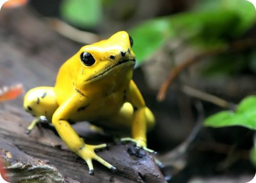
Toxic Frog. This golden frog is only about 5 centimeters (2 inches) long, but it’s the most poisonous vertebrate on Earth. One dose of its toxin can kill up to 20 humans!
Amphibians reproduce sexually with either external or internal fertilization. They attract mates in a variety of ways. For example, the loud croaking of frogs is their mating call. Each frog species has its own distinctive call that other members of the species recognize as their own. Most salamanders use their sense of smell to find a mate. The males produce a chemical odor that attracts females of the species.
Unlike other tetrapod vertebrates (reptiles, birds, and mammals), amphibians do not produce amniotic eggs. Therefore, they must lay their eggs in water so they won’t dry out. Their eggs are usually covered in a jelly-like substance, like the frog eggs shown in Figure below . The jelly helps keep the eggs moist and offers some protection from predators.
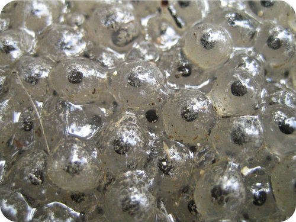
Frog Eggs. Frog eggs are surrounded by “jelly.” What is its function?
Amphibians generally lay large number of eggs. Often, many adults lay eggs in the same place at the same time. This helps to ensure that eggs will be fertilized and at least some of the embryos will survive. Once eggs have been laid, most amphibians are done with their parenting.
The majority of amphibian species go through a larval stage that is very different from the adult form, as you can see from the frog in Figure below . The early larval, or tadpole, stage resembles a fish. It lacks legs and has a long tail, which it uses to swim. The tadpole also has gills to absorb oxygen from water. As the larva undergoes metamorphosis, it grows legs, loses its tail, and develops lungs. These changes prepare it for life on land as an adult frog.
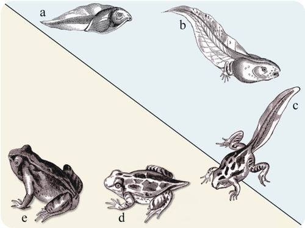
Frog Development: From Tadpole to Adult. A frog larva (tadpole) goes through many changes by adulthood. How do these changes prepare it for life as an adult frog?
There are about 6,200 known species of living amphibians. They are placed in three different orders:
One feature that distinguishes frogs and toads from other amphibians is lack of a tail in adulthood. Frogs and toads also have much longer back legs than other amphibians. Their back legs are modified for jumping. Frogs can jump up to 20 times their own body length. That’s the same as you jumping at least 100 feet, or more than the length of a basketball court. Think how fast you could move if you could travel that far on one jump!
Frogs and toads are closely related, but they differ in several ways. Generally, frogs spend more time in water, and toads spend more time on land. As you can see from Figure below , frogs also have smoother, moister skin than toads, as well as longer hind legs.
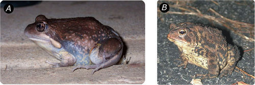
Frog and Toad. Frogs (a) and toads (b) are placed in the same amphibian order. What traits do they share?
Unlike frogs and toads, salamanders and newts keep their tails as adults (see Figure below ). They also have a long body with short legs, and all their legs are about the same length. This is because they are adapted for walking and swimming rather than jumping. An unusual characteristic of salamanders is their ability to regenerate, or regrow, legs that have been lost to predators.
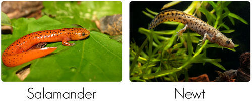
Salamander and Newt. Salamanders and newts can walk or swim. Salamander on a leaf (left), newt swimming in the water (right).
Caecilians are most closely related to salamanders. As you can see from Figure below , they have a long, worm-like body without legs. Caecilians evolved from a tetrapod ancestor, but they lost their legs during the course of their evolution.
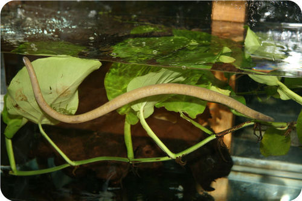
Swimming Caecilian. Caecilians are the only amphibians without legs.
Fossil evidence shows that amphibians evolved about 365 million years ago from a lobe-finned lungfish ancestor. As the earliest land vertebrates, they were highly successful. Some of them were much larger than today’s amphibians. For more than 100 million years, amphibians remained the dominant land vertebrates. Then some of them evolved into reptiles. Once reptiles appeared, with their amniotic eggs, they replaced amphibians as the dominant land vertebrates.
Amphibians can be found in freshwater and moist terrestrial habitats throughout the world. The only continent without amphibians is Antarctica. Amphibians are especially numerous in temperate lakes and ponds and in tropical rainforests.
Amphibians are an important food source for animals such as birds, snakes, raccoons, and fish. Amphibians are also important predators. As larvae, they feed mainly on small aquatic animals such as water insects. They may also feed on algae. As adults, amphibians are completely carnivorous. They may catch and eat worms, snails, and insects, as the frog in Figure below is doing. Unlike other amphibians, caecilians are burrowers. They use their head to dig in the soil, and they feed on earthworms and other annelids. Caecilians can be found in moist soil near rivers and streams in tropical regions.
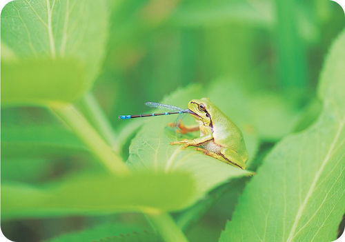
Frog Predator. A frog eating its insect prey.
Currently, almost one third of all amphibian species face the threat of extinction. The reasons include habitat loss, pollution, climate change, and the introduction of non-native species. Most of these problems are the result of human actions.
Amphibians have permeable skin that easily absorbs substances from the environment. This may explain why they seem to be especially sensitive to pollution. Monitoring the health and survival of amphibians may help people detect pollution early, before other organisms are affected.
1. What is a tetrapod?
2. How does the temperature of the environment affect the level of activity of an amphibian?
3. What is the cloaca? What functions does it serve in amphibians?
4. Describe three different ways that amphibians may absorb oxygen.
5. Outline the life cycle of frogs.
6. Assume that a certain species of toad appears to be dying out in a given ecosystem, perhaps because of pollution. Many people think that the toad problem is unimportant because “it’s just a toad.” Write a letter to a hypothetical newspaper editor in which you explain why the health and survival of amphibians such as this toad species are important to all living things in an ecosystem.
7. Compare and contrast the three orders of living amphibians.
8. Explain why amphibians were able to become the dominant land vertebrates for millions of years.
Amphibians gave rise to reptiles, which replaced them as the dominant land vertebrates.
Reptiles are a class of tetrapod vertebrates that produce amniotic eggs. They include crocodiles, alligators, lizards, snakes, and turtles. The reptile class is one of the largest classes of vertebrates. It consists of all amniotes except birds and mammals.
Reptiles have several adaptations for living on dry land that amphibians lack. For example, as shown in Figure below , the skin of most reptiles is covered with scales. The scales are made of very tough keratin, and they protect reptiles from injury, and also prevent them from losing water.
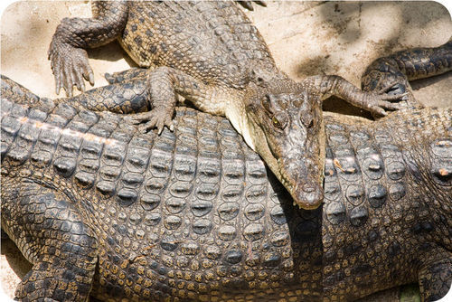
Crocodile Scales. These crocodiles are covered with tough, waterproof scales.
The scales of reptiles prevent them from absorbing oxygen through their skin, as amphibians can. Instead, reptiles breathe air only through their lungs. However, their lungs are more efficient than the lungs of amphibians, with more surface area for gas exchange. This is another important reptile adaptation for life on land.
Reptiles have various ways of moving air into and out of their lungs. Lizards and snakes use muscles of the chest wall for this purpose. These are the same muscles used for running, so lizards have to hold their breath when they run. Crocodiles and alligators have a large sheet of muscle below the lungs, called a diaphragm, that controls their breathing. This is a structure that is also found in mammals.
Like amphibians, reptiles are ectotherms with a slow metabolic rate. Their metabolism doesn’t generate enough energy to keep their body temperature stable. Instead, reptiles regulate their body temperature through their behavior. For example, the crocodile in Figure below is soaking up heat from the environment by basking in the sun. Because of their ectothermy, reptiles can get by with as little as one tenth the food needed by endotherms such as mammals. Some species of reptiles can go several weeks between meals.

Heat Transfer to an Ectothermic Reptile. This crocodile is being warmed by the environment in three ways. Heat is radiating directly from the sun to the animal’s back. Heat is also being conducted to the animal from the rocks it rests on. In addition, convection currents are carrying warm air from surrounding rocks to the animal’s body.
Like amphibians, most reptiles have a heart with three chambers, although crocodiles and alligators have a four-chambered heart like birds and mammals. The reptile brain is also similar in size to the amphibian brain, taking into account overall body size. However, the parts of the reptile brain that control the senses and learned behavior are larger than in amphibians.
Most reptiles have good eyesight and a keen sense of smell. Snakes smell scents in the air using their forked tongue (see Figure below ). This helps them locate prey. Some snakes have heat-sensing organs on their head that help them find endothermic prey, such as small mammals and birds.
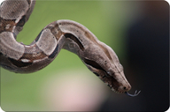
Snake “Smelling” the Air. A snake flicks its tongue in and out to capture scent molecules in the air.
Most reptiles reproduce sexually and have internal fertilization. Males have one or two penises that pass sperm from their cloaca to the cloaca of a female. Fertilization occurs within the cloaca, and fertilized eggs leave the female’s body through the opening in the cloaca. In a minority of species, the eggs are retained inside the female’s body until they hatch. Then the offspring leave the mother’s body through the cloaca opening.
Unlike amphibians, reptiles produce amniotic eggs (see Figure below ). The shell, membranes, and other structures of an amniotic egg protect and nourish the embryo. They keep the embryo moist and safe while it grows and develops. They also provide it with a rich, fatty food source (the yolk).
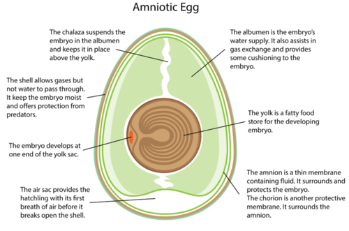
Amniotic Egg. The amniotic egg is an important adaptation in fully terrestrial vertebrates. It first evolved in reptiles. The shells of reptile eggs are either hard or leathery.
Unlike amphibians, reptiles do not have a larval stage. Instead, newly hatched reptiles look like smaller versions of the adults. They are able to move about on their own, but they are vulnerable to predators. Even so, most reptile parents provide no care to their hatchlings. In fact, most reptiles don’t even take care of their eggs. For example, female sea turtles lay their eggs on a sandy beach and then return to the ocean. The only exceptions are female crocodiles and alligators. They may defend their nest from predators and help the hatchings reach the water. If the young remain in the area, the mother may continue to protect them for up to a year.
There are more than 8,200 living species of reptiles, with the majority being snakes or lizards. They are commonly placed in four different orders. The four orders are described in Table below .
Click on the image above to view the table
The earliest amniotes evolved about 350 million years ago. They resembled small lizards, but they were not yet reptiles. Their amniotic eggs allowed them to move away from bodies of water and become larger. They soon became the most important land vertebrates.
By about 320 million years ago, early amniotes had diverged into two groups, called synapsids and sauropsids. Synapsids were amniotes that eventually gave rise to mammals. Sauropsids were amniotes that evolved into reptiles, dinosaurs, and birds. The two groups of amniotes differed in their skulls. The earliest known reptile, pictured in Figure below dates back about 315 million years.
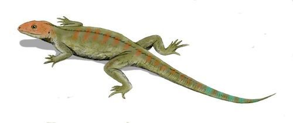
Earliest Reptile: Hylonomus. The earliest known reptile is given the genus name Hylonomus. It was about 20 to 30 centimeters (8 to 12 inches) long, lived in swamps, and ate insects and other small invertebrates.
At first, synapsids were more successful than sauropsids. They became the most common vertebrates on land. However, during the Permian mass extinction 245 million years ago, most synapsids went extinct. Their niches were taken over by sauropsids, which had been relatively unimportant until then. This is called the “Triassic takeover.”
By the middle of the Triassic about 225 million years ago, sauropsids had evolved into dinosaurs. Dinosaurs became increasingly important throughout the rest of the Mesozoic Era, as they radiated to fill most terrestrial niches. This is why the Mesozoic Era is called the “Age of the Dinosaurs.” During the next mass extinction, which occurred at the end of the Mesozoic Era, all of the dinosaurs went extinct. Many other reptiles survived, however, and they eventually gave rise to modern reptiles.
Figure below shows a traditional phylogenetic tree of living reptiles. Based on this tree, some of the earliest reptiles to diverge were ancestors of turtles. The first turtle-like reptiles are thought to have evolved about 250 million years ago. Ancestral crocodilians evolved at least 220 million years ago. Tuataras may have diverged from squamates (snakes and lizards) not long after that. Finally, lizards and snakes went their separate ways about 150 million years ago.

Traditional Reptile Phylogenetic Tree. This phylogenetic tree is based on physical traits of living and fossil reptiles. Trees based on DNA comparisons may differ from the traditional tree and from each other, depending on the DNA sequences used. Reptile evolution is currently an area of intense research and constant revision.
Today, reptiles live in a wide range of habitats. They can be found on every continent except Antarctica. Many turtles live in the ocean, while others live in freshwater or on land. Lizards are all terrestrial, but their habitats may range from deserts to rainforests, and from underground burrows to the tops of trees. Most snakes are terrestrial and live in a wide range of habitats, but some snakes are aquatic. Crocodilians live in and around swamps or bodies of freshwater or salt water.
What reptiles eat is also very diverse, but the majority of reptiles are carnivores. Large reptiles such as crocodilians are the top predators in their ecosystems, preying on birds, fish, deer, turtles, and sometimes domestic livestock. Their powerful jaws can crush bones and even turtle shells. Smaller reptiles—including tuataras, snakes, and many lizards—are also important predators, preying on insects, frogs, birds, and small mammals such as mice.
Most terrestrial turtles are herbivores. They graze on grasses, leaves, flowers, and fruits. Marine turtles and some species of lizards are omnivores, feeding on plants as well as insects, worms, amphibians, and small fish.
Many species of reptiles, especially marine reptiles, are at risk of extinction. Some are threatened by habitat loss. For example, many beaches where turtles lay their eggs have been taken over and developed by people. Other marine reptiles have been over-hunted by humans. Marine turtles and their eggs are still eaten in some countries despite being protected species.
Some reptiles are preyed upon by non-native species introduced by humans. For example, marine iguanas on the Galápagos Islands are threatened by dogs and cats that people have brought to the islands. The iguanas are slow and tame and have no adaptations to these new predators.
1. Describe reptile scales and the functions they serve.
2. What is a diaphragm? What does it do?
3. Describe two senses that reptiles may use to locate prey.
4. Outline the structure and function of an amniotic egg.
5. Identify amniotes called synapsids and sauropsids.
6. Give a brief overview of reptile evolution.
7. Pretend you are a reptile such as a lizard. Explain how you might stay warm on a cold day.
8. Compare and contrast crocodilians with other orders of reptiles.
9. Explain why reptiles were able to replace amphibians as the dominant land vertebrates.
Birds evolved from a reptile ancestor but they are very different from reptiles today. Birds are also the most numerous tetrapod vertebrates.
Birds are endothermic tetrapod vertebrates. They are bipedal, which means they walk on two legs. Birds also lay amniotic eggs, and the eggs have hard, calcium carbonate shells. Although birds are the most recent class of vertebrates to evolve, they are now the most numerous vertebrates on Earth. Why have birds been so successful? What traits allowed them to increase and diversify so rapidly?
Birds can vary considerably in size, as you can see from the world’s smallest and largest birds, pictured in Figure below . The tiny bee hummingbird is just 5 centimeter (2 inches) long, whereas the ostrich towers over people at a height of 2.7 meters (9 feet). All modern birds have wings, feathers, and beaks. They have a number of other unique traits as well, most of which are adaptations for flight. Flight is used by birds as a means of locomotion in order to find food and mates and to avoid predators. Although not all modern birds can fly, they all evolved from ancestors that could.
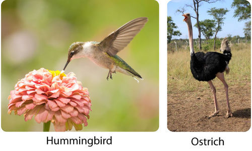
Range of Body Size in Birds. The bee hummingbird is the smallest bird. The ostrich is the largest.
Wings are an obvious adaptation for flight. They are actually modified front legs. Birds move their wings using muscles in the chest. These muscles are quite large, making up as much as 35 percent of a bird’s body weight.
Feathers help birds fly and also provide insulation and serve other purposes. Birds actually have two basic types of feathers: flight feathers and down feathers. Both are shown in Figure below . Flight feathers are long, stiff, and waterproof. They provide lift and air resistance without adding weight. Down feathers are short and fluffy. They trap air next to a bird’s skin for insulation.
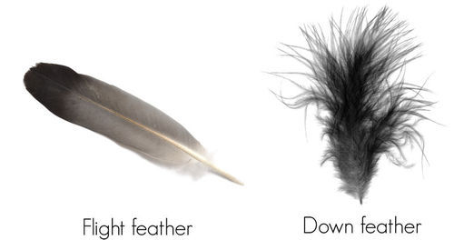
Types of Bird Feathers. These two types of bird feathers have different uses. How is each feather’s structure related to its function?
Birds need a light-weight body in order to stay aloft. Even so, flying is hard work, and flight muscles need a constant supply of oxygen- and nutrient-rich blood. The organ systems of birds are adapted to meet these needs.
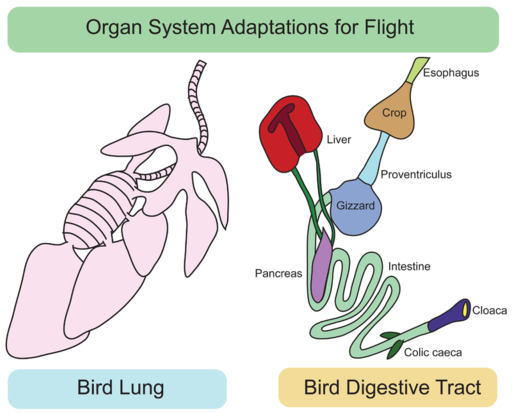
Organ System Adaptations for Flight. The intricate passageways in a bird’s lung are adapted for efficient gas exchange. Find the crop and gizzard in the digestive tract diagram. What are their functions? Bird Lung (left), Bird Digestive Tract (right)
Birds have a large brain relative to the size of their body. Not surprisingly, the part of the brain that controls flight is the most developed part. The large brain size of birds is also reflected by their high level of intelligence and complex behavior. In fact, birds such as crows and ravens may be more intelligent than many mammals. They are smart enough to use objects such as twigs for tools. They also demonstrate planning and cooperation. Most birds have a poor sense of smell, but they make up for it with their excellent sense of sight. Predatory birds have especially good eyesight. Hawks, for example, have vision that is eight times sharper than human vision.
Reproduction in birds may be quite complicated and lengthy. Birds reproduce sexually and have separate sexes and internal fertilization, so males and females must mate for fertilization to occur. Mating is generally preceded by courtship. In most species, parents also take care of their eggs and hatchlings.
Courtship is behavior that is intended to attract a mate. It may involve singing specific courtship songs or putting on some type of visual display. For example, a bird may spread out and display its tail feathers or do a ritualized mating “dance.” Typically, males perform the courtship behavior, and females choose a mate from among competing males.
During mating, a male bird presses his cloaca against his mate’s cloaca and passes sperm from his cloaca to hers. After fertilization, eggs pass out of the female’s body, exiting through the opening in the cloaca.
Eggs are usually laid in a nest. The nest may be little more than a small depression in the ground, or it may be very elaborate, like the weaver bird nest in Figure below . Eggs that are laid on the ground may be camouflaged to look like their surroundings (also shown in Figure below ). Otherwise, eggs are usually white or pastel colors such as pale blue or pink.
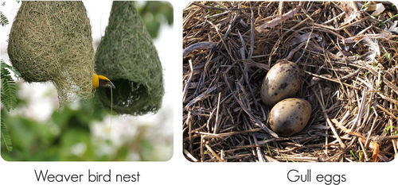
Variation in Bird Nests. A weaver bird uses grasses to weave an elaborate nest (left). The eggs of a ground-nesting gull are camouflaged to blend in with the nesting materials (right).
After birds lay their eggs, they generally keep the eggs warm with their body heat while the embryos inside continue to develop. This is called incubation, or brooding. In most species, parents stay together for at least the length of the breeding season. In some species, they stay together for life. By staying together, the males as well as females can incubate the eggs and later care for the hatchlings. Birds are the only nonhuman vertebrates with this level of male parental involvement.
Ground-nesting birds, such as ducks and chickens, have hatchlings that are able to run around and feed themselves almost as soon as they break through the eggshell. Being on the ground makes them vulnerable to predators, so they need to be relatively mature when they hatch in order to escape. In contrast, birds that nest off the ground—in trees, bushes, or buildings—have hatchlings that are naked and helpless. The parents must protect and feed the immature offspring for weeks or even months. However, this gives the offspring more time to learn from the parents before they leave the nest and go out on their own.
There are about 10,000 living species of birds. Almost all of them can fly, but there are several exceptions.
Some birds have lost the ability to fly during the course of their evolution. Several flightless birds are shown in Figure below . They include the ostrich, kiwi, rhea, cassowary, and moa. All of these birds have long legs and are adapted for running. The penguins shown in the figure are also flightless birds, but they have a very different body shape. That’s because they are adapted for swimming rather than running.
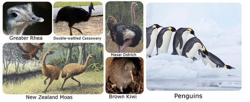
Flightless Birds. Flightless birds that are adapted for running include the ostrich, kiwi, rhea, cassowary, and moa. Penguins are flightless birds adapted for swimming.
Birds that are able to fly are divided into 29 orders that differ in their physical traits and behaviors. Table below describes seven of the most common orders. As shown in the table, the majority of flying birds are perching birds, like the honeyeater described in the last row of the table. The order of perching birds has more species than all the other bird orders combined. In fact, this order of birds is the largest single order of land vertebrates.
Click on the image above to view the table
Birds are thought to have evolved from a group of bipedal dinosaurs called theropods. The ancestor of birds was probably similar to the theropod called Deinonychus, which is represented by the sketch in Figure below . Fossils of Deinonychus were first identified in the 1960s. This was an extremely important discovery. It finally convinced most scientists that birds had descended from dinosaurs, which had been debated for almost a century.
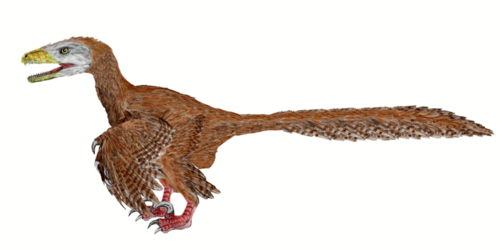
Extinct Bird Relative: Deinonychus. Deinonychus shared many traits with birds. What similarities with birds to you see?
Deinonychus is the genus name of an extinct dinosaur that is considered to be one of the closest non-bird relatives of modern birds. It lived about 110 million years ago in what is now North America. Deinonychus was a predatory carnivore with many bird-like features. For example, it had feathers and wings. It also had strong legs with clawed feet, similar to modern raptors. Its respiratory, circulatory, and digestive systems were similar to those of birds as well. The location of fossilized eggs near Deinonychus fossils suggests that it may have brooded its eggs. This would mean that it was endothermic. (Can you explain why?) On the other hand, Deinonychus retained a number of reptile-like traits, such as jaws with teeth and hands with claws at the tips of its wings.
Scientists have long speculated about the evolution of flight in birds. They wonder how and why birds evolved wings from a pair of front limbs. Several hypotheses have been suggested. Here are just two:
Scientists still don’t know how or why wings and flight evolved, but they continue to search for answers. In addition to fossils, they are studying living vertebrates such as bats that also evolved adaptations for flight.
Birds live and breed in most terrestrial habitats on all seven continents, from the Arctic to Antarctica. Because they are endothermic, birds can live in a wider range of climates than reptiles or amphibians, although the greatest diversity of birds occurs in tropical regions. Birds are important members of every ecosystem in which they live, occupying a wide range of ecological positions.
Some birds are generalists. A generalist is an organism that can eat many different types of food. Other birds are highly specialized in their food needs and can eat just one type of food. Raptors such as hawks and owls are carnivores. They hunt and eat mammals and other birds. Vultures are scavengers. They eat the remains of dead animals, such as roadkill. Aquatic birds generally eat fish or water plants. Perching birds may eat insects, fruit, honey, or nectar. Many fruit-eating birds play a key role in seed dispersal, and some nectar-feeding birds are important pollinators. Bird beaks are generally adapted for the food they eat. For example, the sharp, hooked beak of a raptor is well suited for killing and tearing apart prey. The long beak of the hummingbird in Figure below co-evolved with the tube-shaped flowers from which it sips nectar.
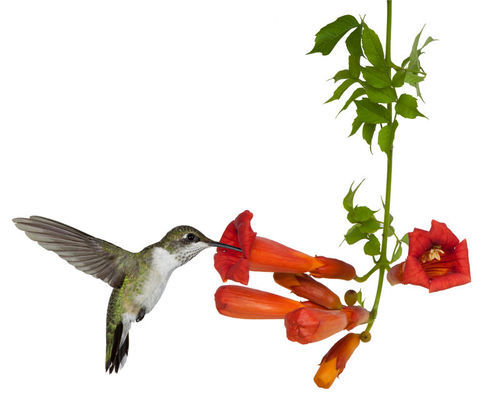
Hummingbird Sipping Nectar. A hummingbird gets nectar from flowers and pollinates the flowers in return. What type of relationship exists between the bird and the flowering plant?
Hundreds of species of birds have gone extinct as a result of human actions. A well-known example is the passenger pigeon. It was once the most common bird in North America, but over-hunting and habitat destruction led to its extinction in the 1800s. Habitat destruction and use of the pesticide DDT explain the recent extinction of the dusky seaside sparrow. This native Florida bird was declared extinct in 1990.
Today, some 1,200 species of birds are threatened with extinction by human actions. Humans need to take steps to protect this precious and important natural resource. What can you do to help?
Although not as famous as its bald cousin, Golden Eagles are much easier to find in Northern California - one of the largest breeding populations for Golden Eagles. The largest of the raptors, Golden Eagles weigh typically between 8 and 12 pounds, and their wing span is around 6 to 7 feet. These eagles dive towards earth to catch prey, and can reach speeds of up to 200 mph! Meet one of the largest birds of prey at http://www.kqed.org/quest/television/cool-critters-the-golden-eagle .

Click on the image above for more content
Owls are amazing creatures. They have many adaptations that allow them to thrive in their environments. Their claws are enormous and powerful, they have excellent hearing, and fantastic vision in low light. And the Great Horned Owl can fly almost silently due to "fringes" on their feathers that help to break up the sound of air passing over their wings. Learn more of the Great Horned Owl at http://www.kqed.org/quest/television/cool-critters-great-horned-owls- .
Click on the image above for more content
Ever wonder why a vulture's head is bald? Turkey Vultures are very interesting birds. The Turkey Vulture has no vocal organs – they can only grunt or hiss, although they usually stay silent. They do not build nests – they lay their eggs directly on the ground in caves, crevices, burrows, hollow logs, under fallen trees, or even in abandoned buildings. While these vultures have few natural predators, their main form of defense is vomiting. The foul smelling substance deters most creatures, and will also sting if the offending animal is close enough to get vomit on them. Learn more about Turkey Vultures at http://www.kqed.org/quest/television/cool-critters-turkey-vultures . Also see http://www.wildlife-museum.org/ for the Lindsay Wildlife Museum.
Click on the image above for more content
1. List two functions of feathers in birds.
2. Describe the bird crop and gizzard. What are their functions?
3. How do birds keep their lungs filled with oxygenated air?
4. Give an example of bird behavior that shows their relatively great intelligence.
5. What is courtship? What is its purpose?
6. Draw a sketch of a hypothetical bird that preys on small mammals. The bird must exhibit traits that suit it for its predatory role.
7. Relate two unique traits of birds to flight.
8. Contrast hatchling maturity in birds that are ground-nesting and those that nest off the ground. What is the adaptive significance of the differences?
9. Why did the hummingbird pictured in the Hummingbird Sipping Nectar Figure above evolve such a long, pointed beak?
Birds share a number of important traits with mammals, including a four-chambered heart and endothermy. The next chapter describes mammals in detail.
Opening image copyright J. McPhail, 2010. http://www.shutterstock.com . Used under license from Shutterstock.com.
For Table above , from top to bottom,
For Table above , from top to bottom,
For Table above , from top to bottom,
{kind=link}
{kind=link}
{kind=link}
{kind=link}
{kind=link}
{kind=link}
{kind=link}
{kind=link}
{kind=link}
%20http://www.shutterstock.com;%20(b)%20http://commons.wikimedia.org/wiki/File:Southern_stingrays_at_stingray_city.jpg;%20(c)%20http://en.wikipedia.org/wiki/File:Hydrolagus_colliei.jpg){kind=link}
{kind=link}
%20http://www.flickr.com/photos/heatherw/11017716/;%20(b)%20http://en.wikipedia.org/wiki/File:Bufo_americanus1.jpg){kind=link}
{kind=link}
{kind=link}
%20http://commons.wikimedia.org/wiki/File:Baya_Weaver_%28Ploceus_philippinus%29-_Male_making_nest_W_IMG_0657.jpg;%20(Gull%20eggs)%20http://www.flickr.com/photos/neomyrtus/7186415236/){kind=link}
%20http://www.flickr.com/photos/schmaeche/2954839327/;%20(Double%20Wattled%20Cassowary)%20http://www.flickr.com/photos/betta_design/6527573535/;%20(New%20Zealand%20Moas)%20http://commons.wikimedia.org/wiki/File:Giant_Haasts_eagle_attacking_New_Zealand_moa.jpg;%20(Masai%20ostrich)%20http://commons.wikimedia.org/wiki/File:Masai_ostrich.jpg;%20(Brown%20Kiwi)%20http://commons.wikimedia.org/wiki/File:TeTuatahianui.jpg;%20(Penguin)%20http://www.flickr.com/photos/dominique_filippi/4324892278/){kind=link}
{kind=link}